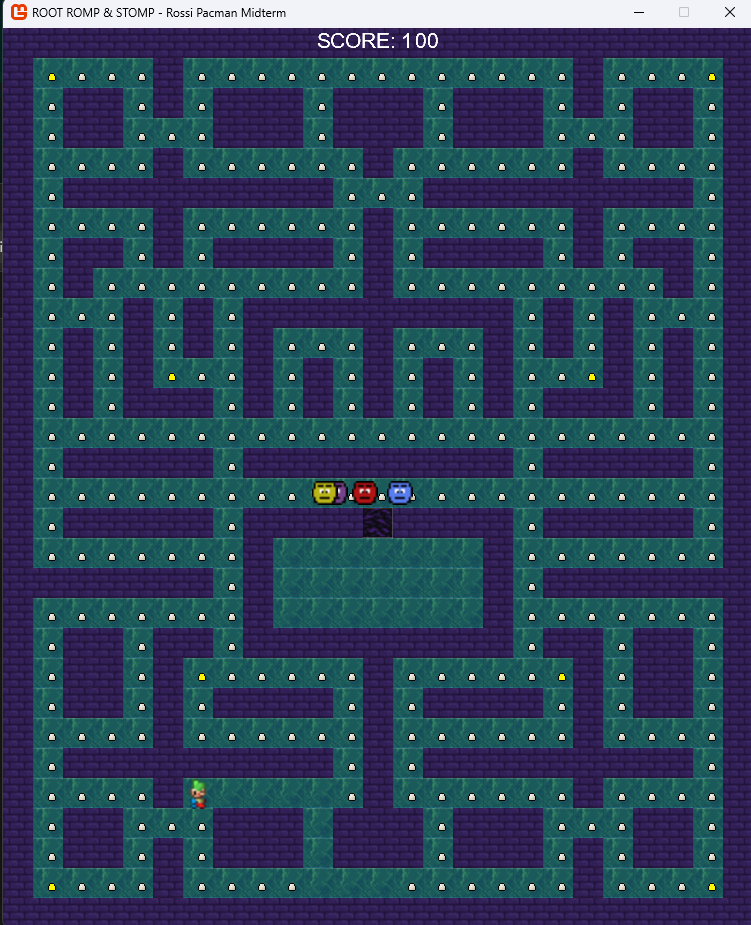
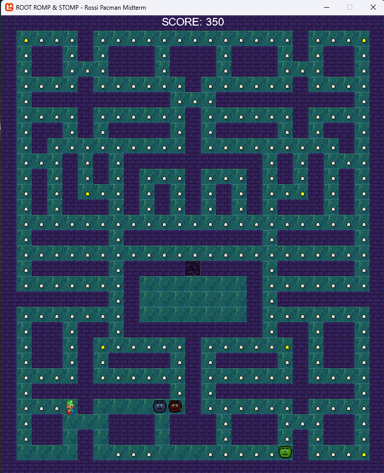

Monogame Pac-Man AI
This project is a Monogame clone of Pac-Man. This goal of this project was to create the same AI patterns see within pac-man such as following and cutting off the players route. This was a project created during my time at the New England Institute of Technology as a part of my artificial intelligence course.


